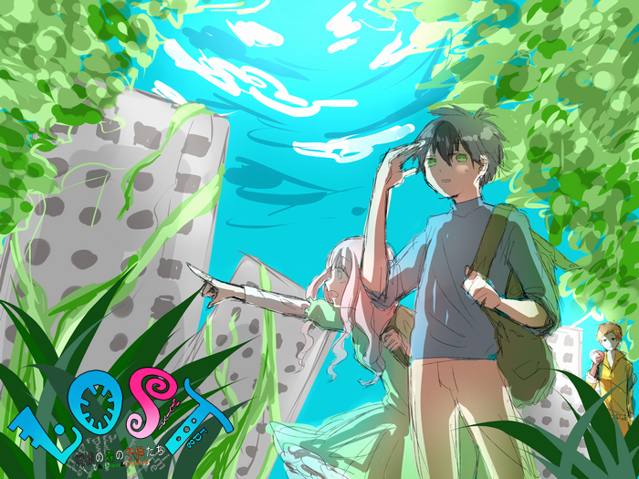
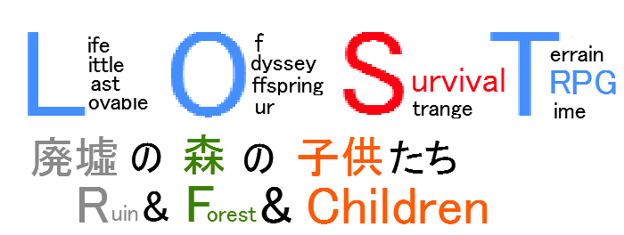

LOSTRPG 基本ルールブック
はじめに
大人たちは死に絶え、子どもたちは残された。
日本中を森が覆い、異形の獣たちが我が物顔で闊歩する。
変わり果てた世界。その中で、彼らは生きることを選択した。
自分たちだけのサバイバル。これは、文明崩壊から５年後の物語。
本ゲームは、文明崩壊後の日本を生き延びる人々を演じるゲームです。 プレイヤーの分身であるキャラクター（以下、PC)は、 物資を求めて危険な森を探索する冒険者となります。
English version (Geneさんが好意で英訳してくださっています。感謝！)
このルールの読み方
かっこの種類
- 【】：キャラクターの能力値やアビリティを表します。
- 《》：特技を表します。
- ＜＞：このゲームで使われる固有名詞を表します。
端数の処理
このゲームでは、割り算を行う場合常に端数は切り上げになります。